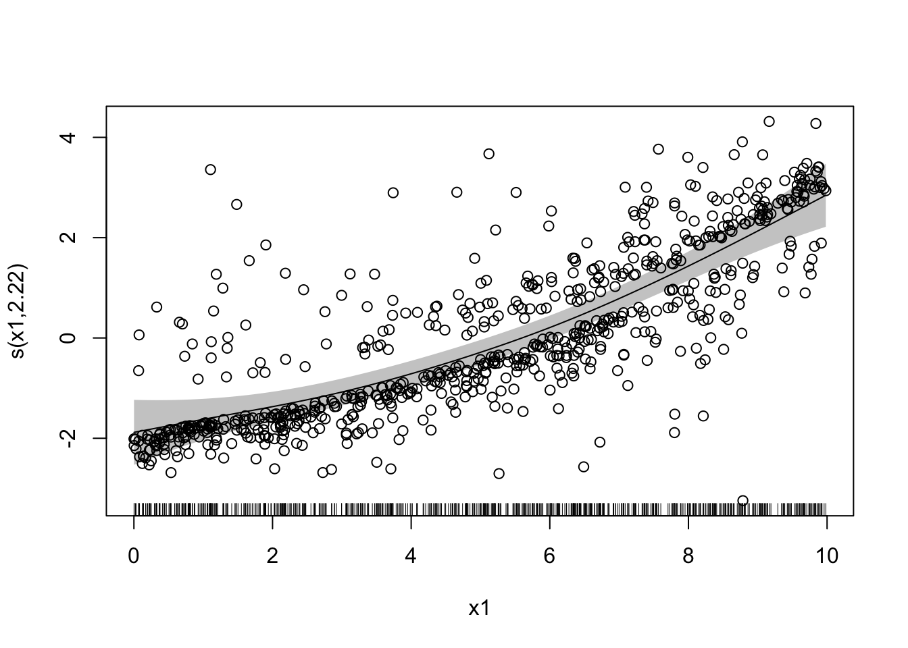
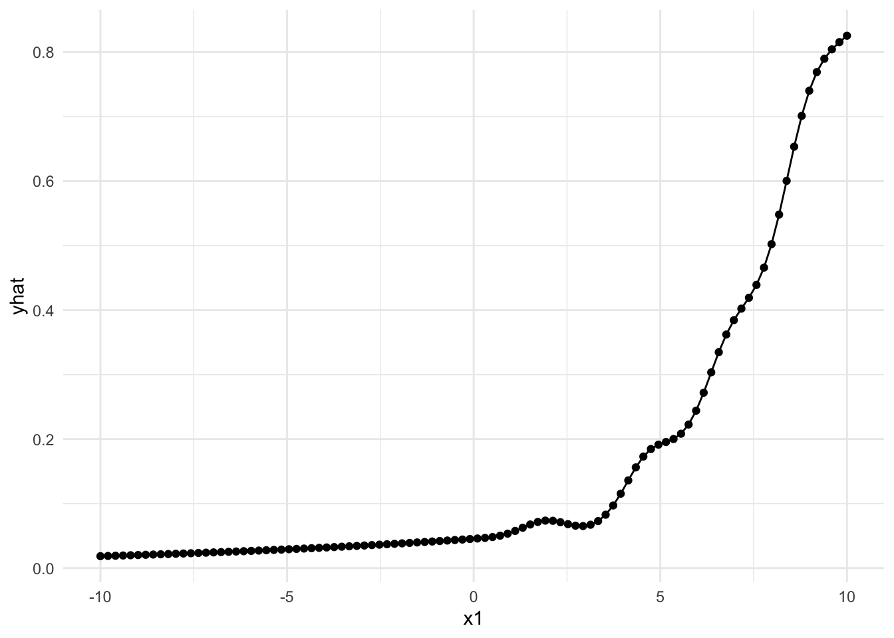
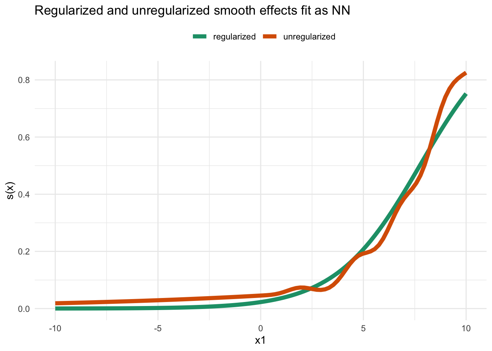

knitr::opts_chunk$set(
message=FALSE, error=TRUE, warning=FALSE
)
# Modeling
library(keras)
library(mgcv)
# Convenience
library(dplyr)
library(broom)
library(ggplot2)
# Sacrificing a goat to the python env
reticulate::use_condaenv("r-reticulate", required = TRUE)
reticulate:::ensure_python_initialized()
tensorflow::tf_config()## TensorFlow v2.4.0 (~/Library/r-miniconda/envs/r-reticulate/lib/python3.7/site-packages/tensorflow)
## Python v3.7 (~/Library/r-miniconda/envs/r-reticulate/bin/python)set.seed(17)
n <- 700
x1 <- runif(n, 0, 10)
x2 <- runif(n, -2, 2)
x3 <- sample(c(0, 1), n, replace = TRUE)
y <- 1 + 2 * x1 + 3 * x2 + 4 * x3 + rnorm(n, 0, 1)
df <- data.frame(y, x1, x2, x3)lm()lm_lm <- lm(y ~ x1 + x2 + x3, data = df)
tidy(lm_lm)## # A tibble: 4 x 5
## term estimate std.error statistic p.value
## <chr> <dbl> <dbl> <dbl> <dbl>
## 1 (Intercept) 1.02 0.0894 11.5 5.41e- 28
## 2 x1 2.00 0.0136 147. 0
## 3 x2 3.01 0.0333 90.1 0
## 4 x3 3.96 0.0786 50.3 3.22e-234glance(lm_lm)## # A tibble: 1 x 12
## r.squared adj.r.squared sigma statistic p.value df logLik AIC BIC
## <dbl> <dbl> <dbl> <dbl> <dbl> <dbl> <dbl> <dbl> <dbl>
## 1 0.978 0.978 1.04 10456. 0 3 -1018. 2045. 2068.
## # … with 3 more variables: deviance <dbl>, df.residual <int>, nobs <int>keraslm_nn <- keras_model_sequential(name = "LM") %>%
layer_dense(units = 1, activation = "linear", use_bias = TRUE, name = "Regression")
lm_nn %>%
compile(
loss = "mse",
optimizer = optimizer_rmsprop(),
metrics = NULL
)
lm_nn %>%
fit(
as.matrix(df[, 2:4]), df$y,
epochs = 50,
batch_size = 8,
validation_split = 0.2,
verbose = TRUE
)
lm_nn## Model
## Model: "LM"
## ________________________________________________________________________________
## Layer (type) Output Shape Param #
## ================================================================================
## Regression (Dense) (None, 1) 4
## ================================================================================
## Total params: 4
## Trainable params: 4
## Non-trainable params: 0
## ________________________________________________________________________________get_weights(lm_nn)## [[1]]
## [,1]
## [1,] 1.932651
## [2,] 2.759862
## [3,] 1.899272
##
## [[2]]
## [1] 2.411098Close enough?
set.seed(17)
n <- 700
x1 <- runif(n, 0, 10)
x2 <- runif(n, -2, 2)
x3 <- sample(c(0, 1), n, replace = TRUE)
predictor <- -3 + 0.05 * x1^2 + x2 + x3
prob <- exp(predictor) / (1 + exp(predictor))
y <- rbinom(n, 1, prob)
df <- data.frame(y, x1, x2, x3)mgcv()Use the mgcv package to estimate a GAM with linear effects of x2 and x3 and a smooth x1 effect.
gam_mgcv <- gam(y ~ s(x1, fx = FALSE) + x2 + x3, family = binomial(link = "logit"), data = df)
gam_mgcv$coefficients## (Intercept) x2 x3 s(x1).1 s(x1).2 s(x1).3
## -1.403222857 1.150180559 1.185939615 0.002580073 -0.211213984 0.047243729
## s(x1).4 s(x1).5 s(x1).6 s(x1).7 s(x1).8 s(x1).9
## -0.165042227 0.056723938 -0.185237557 0.033842307 -0.910089541 1.431656046# smoothing param for later
gam_mgcv$sp## s(x1)
## 1.397658# S matrix
gam_mgcv$smooth[[1]]$S[[1]]## [,1] [,2] [,3] [,4] [,5]
## [1,] 6.827540e+00 -9.348319e-01 -3.542959e+00 1.065734e+00 -4.579464e+00
## [2,] -9.348319e-01 1.220239e+01 5.628796e-01 -6.293468e+00 4.042009e+00
## [3,] -3.542959e+00 5.628796e-01 5.319356e+01 2.386721e+00 -5.101339e+00
## [4,] 1.065734e+00 -6.293468e+00 2.386721e+00 5.292410e+01 6.499267e+00
## [5,] -4.579464e+00 4.042009e+00 -5.101339e+00 6.499267e+00 1.214082e+02
## [6,] 3.732978e+00 -1.349754e+01 4.730126e+00 -1.916964e+01 9.612156e+00
## [7,] -5.340484e+00 4.699940e+00 -5.482847e+00 6.069105e+00 -6.533921e+00
## [8,] -1.219789e+00 4.511026e-01 7.640241e-01 -6.278076e+00 5.199792e+00
## [9,] 9.773332e-17 -3.614376e-17 -6.121603e-17 5.030193e-16 -4.166238e-16
## [,6] [,7] [,8] [,9]
## [1,] 3.732978e+00 -5.340484e+00 -1.219789e+00 9.773332e-17
## [2,] -1.349754e+01 4.699940e+00 4.511026e-01 -3.614376e-17
## [3,] 4.730126e+00 -5.482847e+00 7.640241e-01 -6.121603e-17
## [4,] -1.916964e+01 6.069105e+00 -6.278076e+00 5.030193e-16
## [5,] 9.612156e+00 -6.533921e+00 5.199792e+00 -4.166238e-16
## [6,] 1.092277e+02 7.561453e+00 -1.597419e+01 1.279903e-15
## [7,] 7.561453e+00 3.089331e+02 6.609221e+00 -5.295517e-16
## [8,] -1.597419e+01 6.609221e+00 7.665869e+00 -6.142137e-16
## [9,] 1.279903e-15 -5.295517e-16 -6.142137e-16 4.921274e-32Takeaway: I need to do some GAM-reading.
kerasNeglect the penalisation of the smooth effect and construct an equivalent neural network with keras and tensorflow. Fit it.
# Define inputs, two linear + 1 smooth effect
linear_input <- layer_input(shape = c(2), name = "linear_in")
smooth_input <- layer_input(shape = c(9), name = "smooth_in")
# Define intermediate outputs
linear_out <- linear_input %>%
layer_dense(units = 1, activation = "linear", name = "linear_effect")
# Until I figure out what to use for a smooth effect here
# mgcv shows 9 components of the smooth effects, but just 1 neuron though
smooth_out <- smooth_input %>%
layer_dense(units = 1, activation = "linear", name = "smooth_effect", use_bias = FALSE)
# layer_concatenate sums up intermediate outputs
# sigmoid activation for binary outcome
combined_out <- layer_add(c(linear_out, smooth_out)) %>%
layer_activation(activation = "sigmoid", name = "output_prob")
# Combine the above to a keras model
gam_nn <- keras_model(
inputs = c(linear_input, smooth_input),
outputs = c(combined_out)
)
gam_nn %>%
compile(
loss = "binary_crossentropy", # That's Bernoulli logLik right?
optimizer = optimizer_rmsprop(),
metrics = NULL
)
gam_nn## Model
## Model: "model"
## ________________________________________________________________________________
## Layer (type) Output Shape Param # Connected to
## ================================================================================
## linear_in (InputLayer) [(None, 2)] 0
## ________________________________________________________________________________
## smooth_in (InputLayer) [(None, 9)] 0
## ________________________________________________________________________________
## linear_effect (Dense) (None, 1) 3 linear_in[0][0]
## ________________________________________________________________________________
## smooth_effect (Dense) (None, 1) 9 smooth_in[0][0]
## ________________________________________________________________________________
## add (Add) (None, 1) 0 linear_effect[0][0]
## smooth_effect[0][0]
## ________________________________________________________________________________
## output_prob (Activation) (None, 1) 0 add[0][0]
## ================================================================================
## Total params: 12
## Trainable params: 12
## Non-trainable params: 0
## ________________________________________________________________________________gam_nn %>%
fit(
# First linear input (x2, x3), then smooth input (x1)
x = list(as.matrix(df[, 3:4]), model.matrix(gam_mgcv)[, 4:12]),
y = df$y,
epochs = 200,
batch_size = 32,
validation_split = 0.2,
verbose = TRUE
)
get_weights(gam_nn)## [[1]]
## [,1]
## [1,] 1.1195856
## [2,] 0.7238031
##
## [[2]]
## [1] -1.017889
##
## [[3]]
## [,1]
## [1,] 0.52285141
## [2,] 0.28750712
## [3,] 0.41107199
## [4,] 0.18188684
## [5,] 0.16799061
## [6,] -0.05286731
## [7,] 0.43142590
## [8,] -0.23235863
## [9,] -0.10990276Use the plot function to plot the mgcv model’s smooth term.
plot(gam_mgcv, select = 1, resid = TRUE, pch = 1, cex = 1, shade = TRUE)
Create an equivalent plot for the neural network’s smooth term. You will need to predict over a grid of x1. Bring both plots together in a single plot.
test_df <- tibble::tibble(
y = rep(0, 100),
x1 = seq(-10, 10, length.out = 100),
x2 = rep(0, 100),
x3 = rep(0, 100)
)
lpmat <- predict(gam_mgcv, newdata = test_df, type = "lpmatrix")
gam_nn_preds <- predict(gam_nn, x = list(as.matrix(lpmat[, 2:3]), lpmat[, 4:12]))
test_df %>%
mutate(yhat = as.numeric(gam_nn_preds)) %>%
ggplot(aes(x = x1, y = yhat)) +
geom_point() +
geom_path() +
theme_minimal()
keras w/ PenalisationRead here about the penalisation of smooth terms in mgcv. Search through the mgcv model for all components of the penalisation.
Apply the proper penalisation to the equivalent neural network and refitt the network. Compare the resulting smooth terms with meaningful plots (see 3)). Use the extracted components from 4) You will find the code below helpful.
kernel_regularizer = function(x) {
k_mean(k_batch_dot(x, k_dot(
tf$constant(???, dtype = "float64"), x), axes = 2))
}From Wood 2017:
\[||\boldsymbol{y} - \boldsymbol{X}\boldsymbol{\beta}||^2 + \underbrace{\lambda \boldsymbol{\beta}^\top \boldsymbol{S} \boldsymbol{\beta}}_\text{Regularization term to reconstruct}\]
Current regularizer form:
\[\begin{aligned} \mathtt{mean(batch\_dot(x, dot(???, x))) } & \overset{?}{=} \frac{1}{n} \sum \sum_{\mathrm{batch}} \boldsymbol{\beta} \cdot (\lambda \boldsymbol{S} \cdot \boldsymbol{\beta}) \end{aligned}\]
Making a D and S matrix
# make_Dmat <-function(k = 8) {
# diff(diag(k), differences = 2)
# }
# # S := D^T D
# make_Smat <- function(k = 8) t(make_Dmat(k)) %*% make_Dmat(k)
# Or just take the one from mgcv as I'm presumably supposed to
# Also multiply with lambda for convenience
gam_Smat <- gam_mgcv$sp * gam_mgcv$smooth[[1]]$S[[1]]smooth_out_reg <- smooth_input %>%
layer_dense(
units = 1, activation = "linear", use_bias = FALSE, name = "smooth_effect",
kernel_regularizer = function(x) {
k_mean(k_batch_dot(x,
k_dot(
tensorflow::tf$constant(gam_Smat, dtype = "float32"),
x
),
axes = 2
))
}
)
combined_out_reg <- layer_add(c(linear_out, smooth_out_reg)) %>%
layer_activation(activation = "sigmoid", name = "output_prob")
# Combine the above to a keras model
gam_nn_reg <- keras_model(
inputs = c(linear_input, smooth_input),
outputs = c(combined_out_reg)
)Does it do things?
gam_nn_reg %>%
compile(
loss = "binary_crossentropy", # That's Bernoulli logLik right?
optimizer = optimizer_rmsprop(),
metrics = NULL
)
gam_nn_reg## Model
## Model: "model_1"
## ________________________________________________________________________________
## Layer (type) Output Shape Param # Connected to
## ================================================================================
## linear_in (InputLayer) [(None, 2)] 0
## ________________________________________________________________________________
## smooth_in (InputLayer) [(None, 9)] 0
## ________________________________________________________________________________
## linear_effect (Dense) (None, 1) 3 linear_in[0][0]
## ________________________________________________________________________________
## smooth_effect (Dense) (None, 1) 9 smooth_in[0][0]
## ________________________________________________________________________________
## add_1 (Add) (None, 1) 0 linear_effect[0][0]
## smooth_effect[0][0]
## ________________________________________________________________________________
## output_prob (Activation) (None, 1) 0 add_1[0][0]
## ================================================================================
## Total params: 12
## Trainable params: 12
## Non-trainable params: 0
## ________________________________________________________________________________gam_nn_reg %>%
fit(
# First linear input (x2, x3), then smooth input (x1)
x = list(as.matrix(df[, 3:4]), model.matrix(gam_mgcv)[, 4:12]),
y = df$y,
epochs = 200,
batch_size = 16,
validation_split = 0.2,
verbose = TRUE
)
get_weights(gam_nn_reg)## [[1]]
## [,1]
## [1,] 1.142495
## [2,] 1.054271
##
## [[2]]
## [1] -1.279392
##
## [[3]]
## [,1]
## [1,] 0.0019381738
## [2,] -0.0035180959
## [3,] 0.0003470610
## [4,] -0.0040851720
## [5,] 0.0005828778
## [6,] -0.0039991857
## [7,] -0.0001550479
## [8,] -0.0171021596
## [9,] 1.3893942833What do the predictions look like?
gam_nn_reg_preds <- predict(gam_nn_reg, x = list(as.matrix(lpmat[, 2:3]), lpmat[, 4:12]))
test_df %>%
select(x1) %>%
mutate(
unregularized = as.numeric(gam_nn_preds),
regularized = as.numeric(gam_nn_reg_preds)
) %>%
tidyr::pivot_longer(cols = ends_with("ized")) %>%
ggplot(aes(x = x1, y = value, color = name)) +
scale_color_brewer(palette = "Dark2") +
geom_path(size = 2) +
labs(
title = "Regularized and unregularized smooth effects fit as NN",
x = "x1", y = "s(x)", color = ""
) +
theme_minimal() +
theme(legend.position = "top")